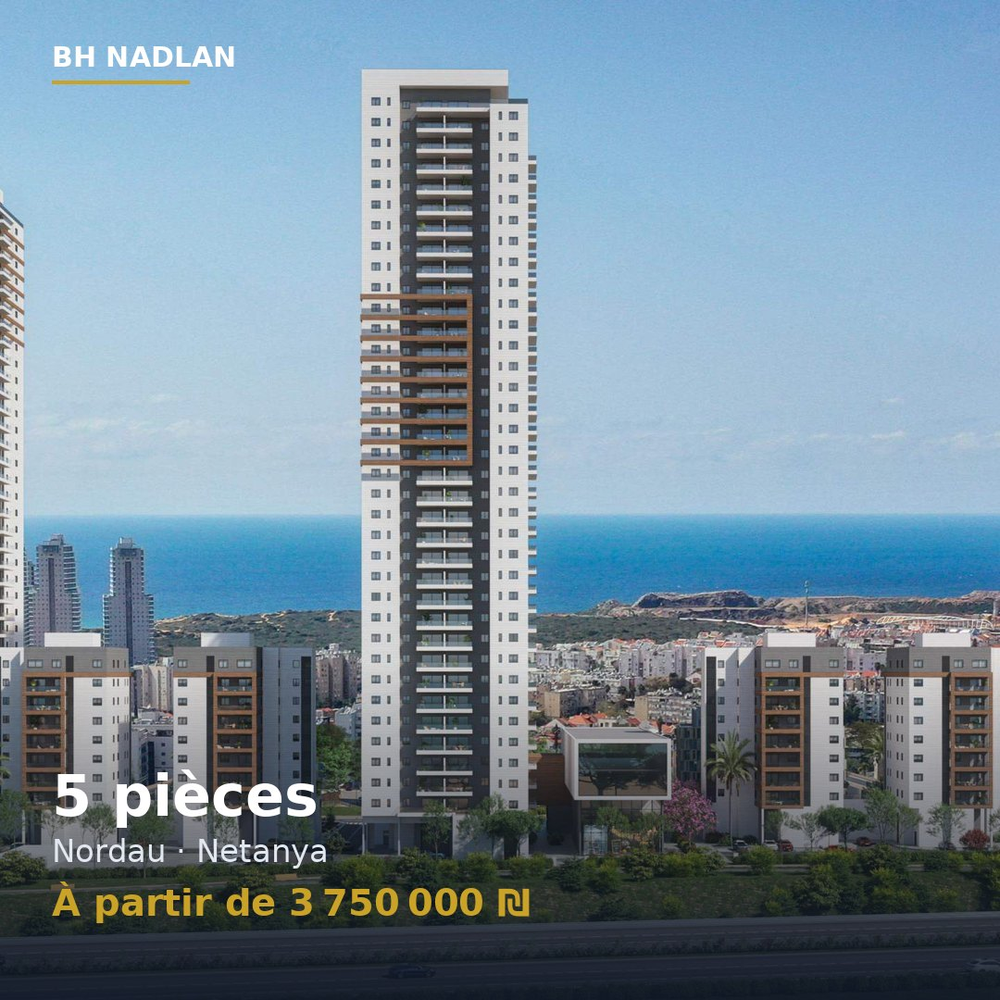

5 pièces – Nordau, Netanya
À partir de 3 750 000 ₪
- Ville
- Netanya
- Typologie
- 5 pièces
- Surfaces
- 133 à 189 m²
- Livraison
- janvier 2031
- Promoteur
- Promoteur reconnu
- Fourchette
- 3 750 000 ₪ – 6 306 818 ₪
Programme neuf à Nordau, Netanya. Promoteur reconnu. Appartements de 5 pièces, de 133 à 189 m². Livraison janvier 2031. À partir de 3 750 000 ₪. BH Nadlan accompagne les acheteurs francophones du premier contact jusqu'à la remise des clés : sélection, négociation, avocat, banque et suivi du chantier.
Écrire sur WhatsApp